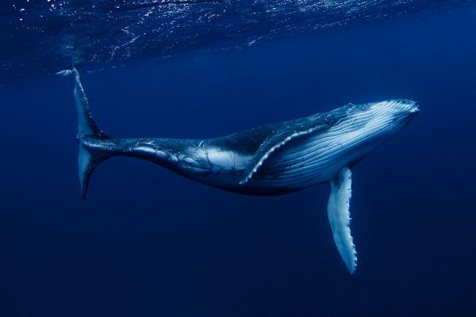
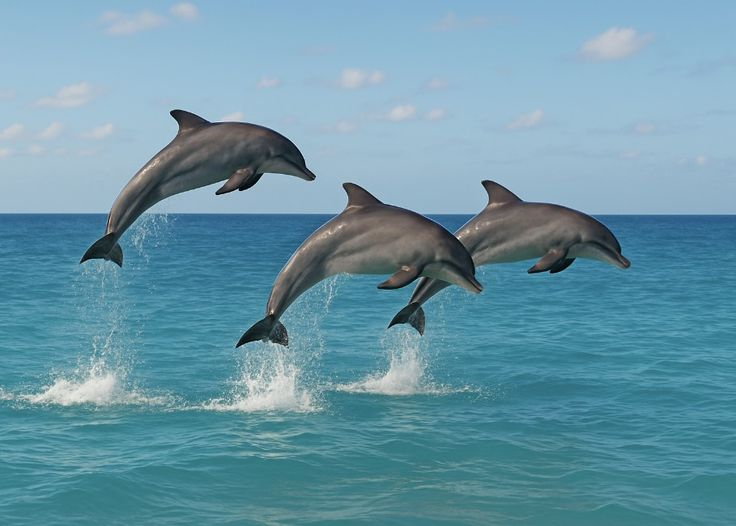
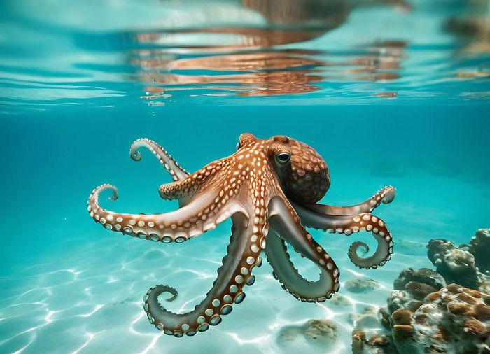
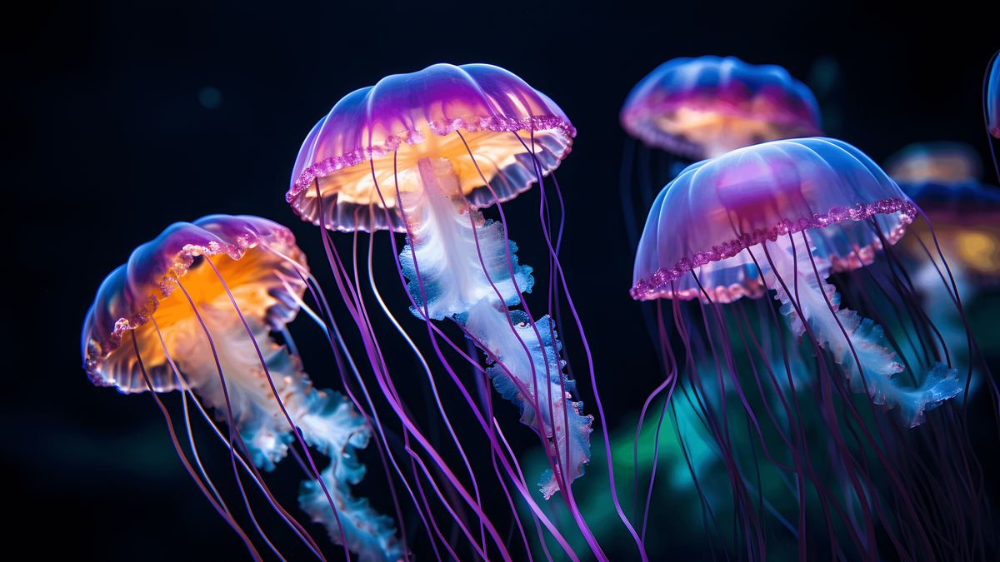
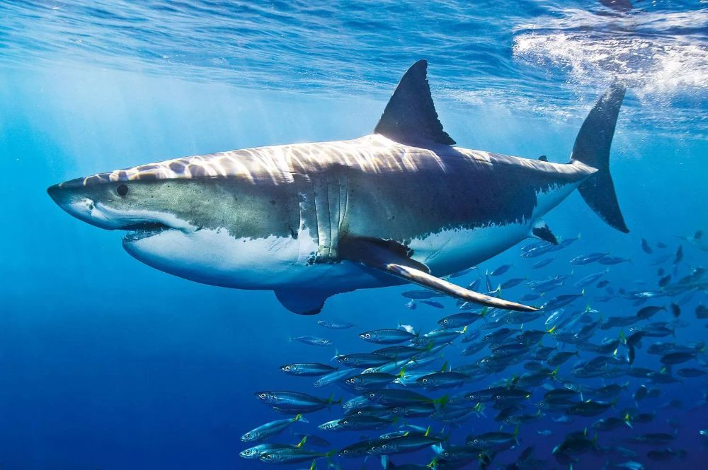
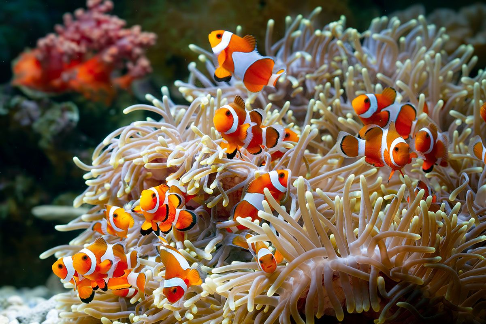
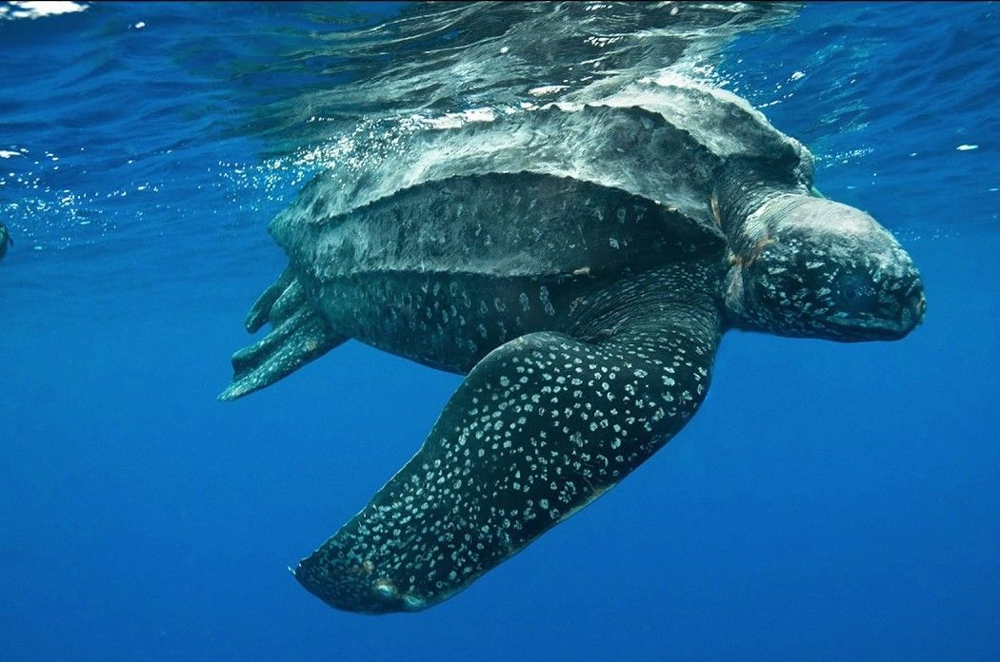
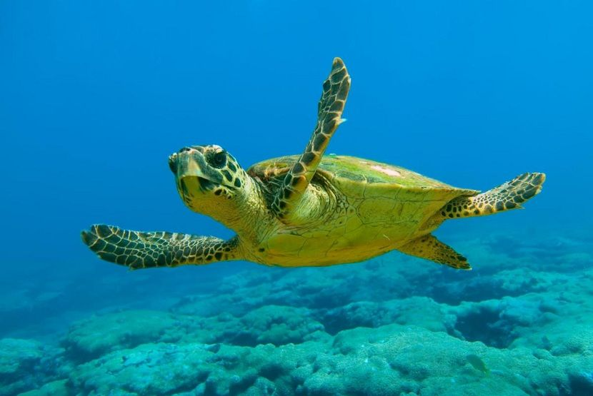

Es el animal más grande del planeta; se alimenta filtrando toneladas de krill y se comunica mediante cantos profundos que viajan cientos de kilómetros.
Son mamíferos cetáceos altamente inteligentes y sociales que usan la ecolocalización para cazar y son famosos por sus acrobacias en el agua.


Invertebrado muy inteligente de tres corazones que destaca por su increíble habilidad para cambiar de color, camuflarse y resolver problemas.
Criaturas gelatinosas sin cerebro ni corazón que flotan a la deriva y usan células urticantes en sus tentáculos para capturar alimento.


Es uno de los depredadores más eficientes del mar, con un olfato extraordinario y mandíbulas con hileras de dientes que se reemplazan continuamente.
Pareja simbiótica donde el pez obtiene refugio seguro contra los depredadores y, a cambio, limpia y protege a la anémona de parásitos.


La tortuga marina más grande del mundo, única por tener un caparazón de cuero flexible que le permite bucear a grandes profundidades.
Reptil marino que viaja miles de kilómetros para desovar y cuyo nombre se debe al color de su grasa, resultado de su dieta de algas.
